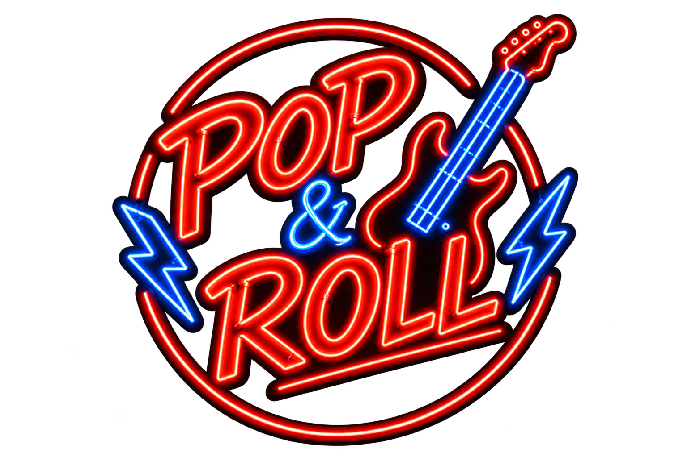
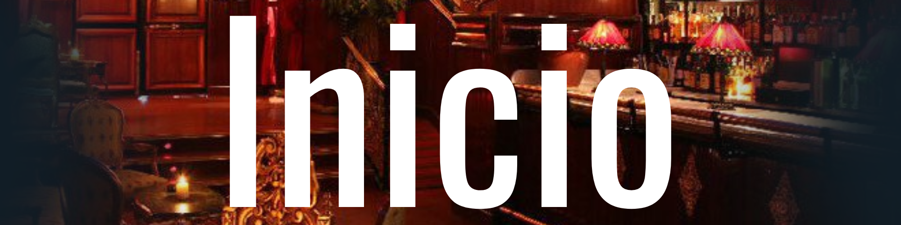
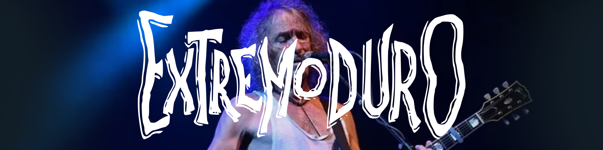
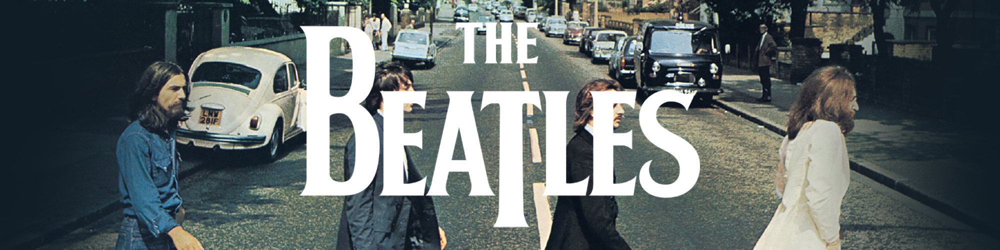
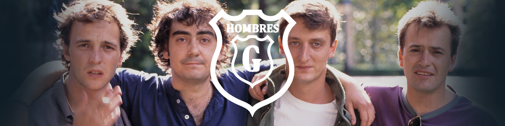
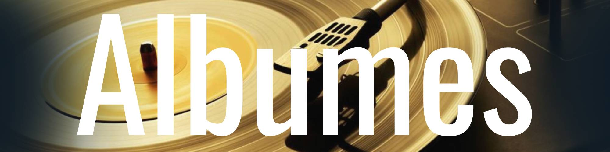
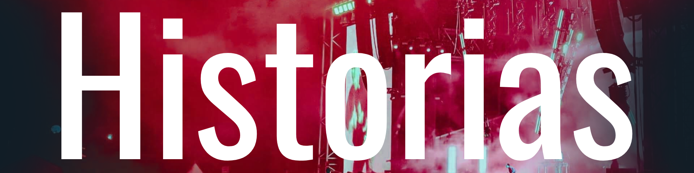
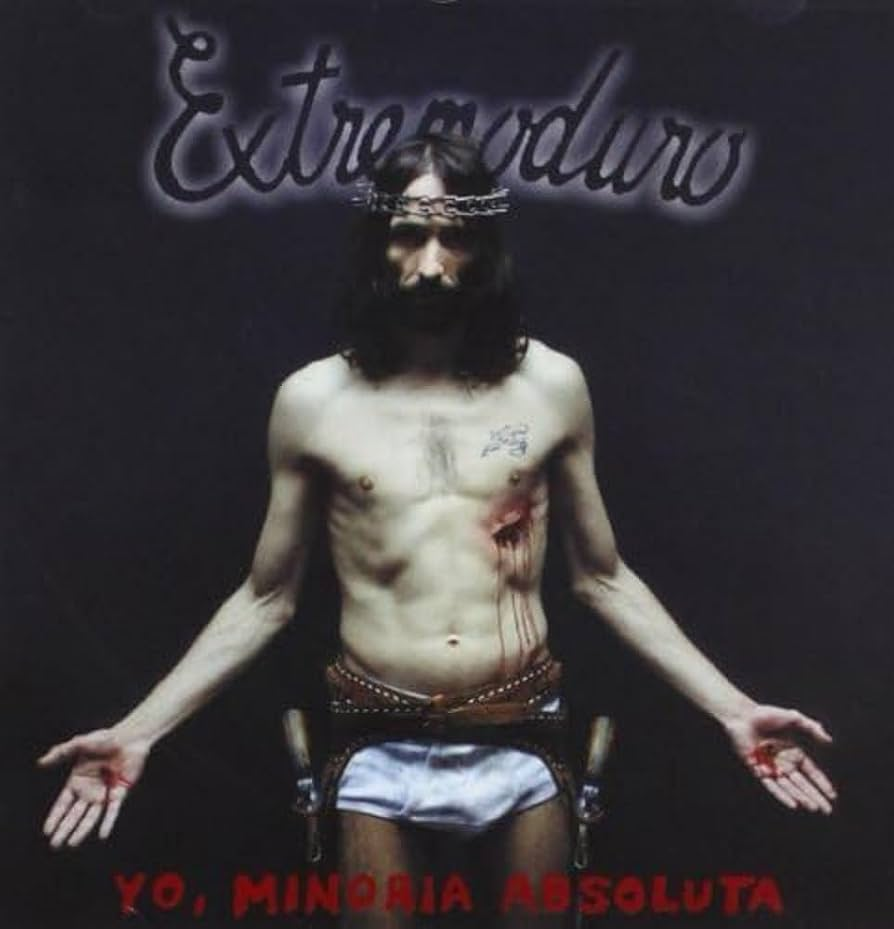
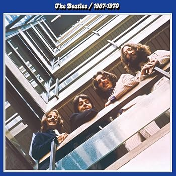
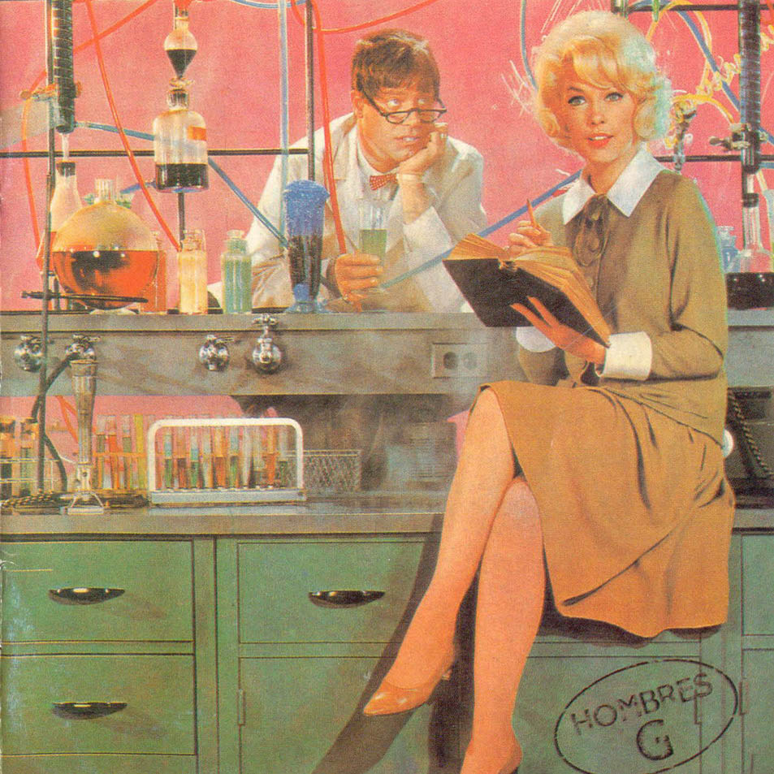

Discos más escuchados



Más Información
Esta página está dirigida a los amantes de los grupos que marcaron la diferencia en la música tanto española como mundialmente
Desde el equipo de Pop & Roll queremos dedicar esta página web a Robe Iniesta, Vocalista y Guitarrista del grupo músical "Extremoduro".
Tristemente falleció el último 10 de Diciembre de a sus 63 Años de edad debido a un tromboembolismo pulmonar.